SUGURU GETO
Born February 3rd, 1990
With the grand plans of changing the world, some herald Suguru Geto as a visionary. A former jujutsu student, Suguru believed in its teachings, until tragic events disillusioned him. Despising non-sorcerers, he champions curse users as the next evolutionary step. Yet, he still deeply treasures his former friends.

CURSED SPIRIT
AQUARIUS
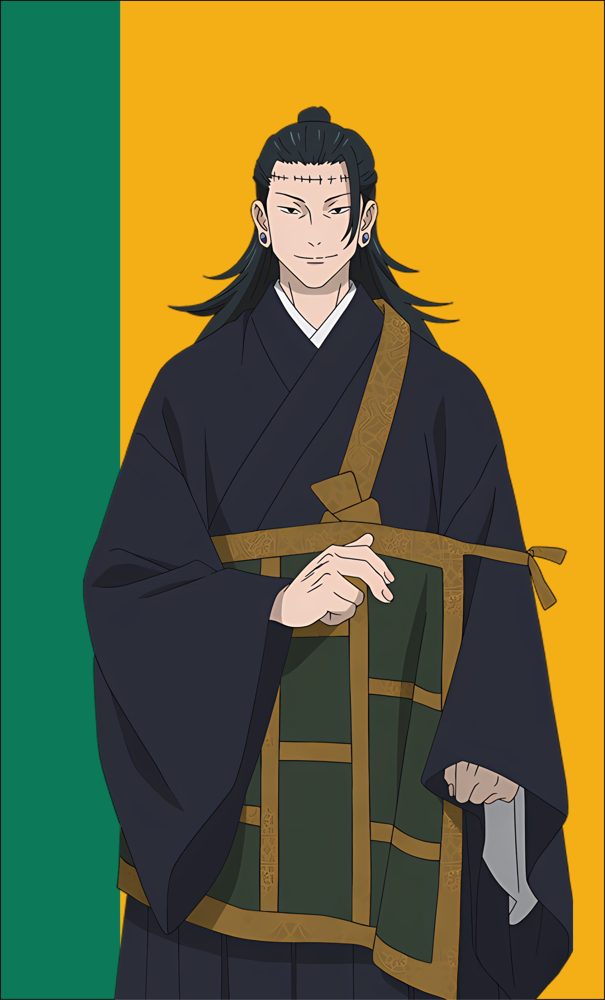
YUJI ITADORI
Born March 20th, 2003
With a Pisces's imaginative mind, Yuji's nurturing personality is evident. He deeply cares for others, valuing every life and ensuring a proper death. Despite his energetic and outgoing traits, witnessing cruelty ignites intense anger within him. He's willing to sacrifice himself for others, embodying his grandfather's last words.
BLACK FLASH
PISCES
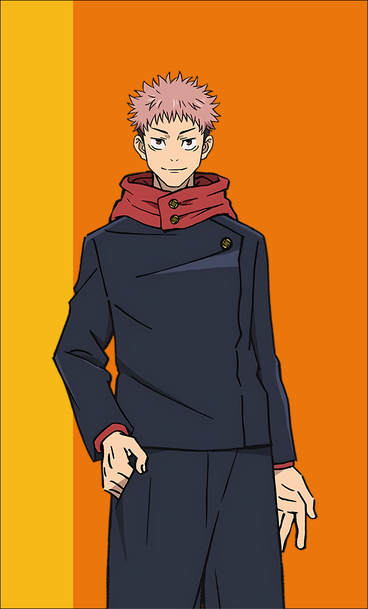
MIWA KASUMI
Born April 4th, 2001
An Aries like Kasumi charges forward with and unwavering determination. Despite her inner struggles, she exudes kindness and diligence, fueled by her ambition to support her siblings. With each step she embodies her sign, fearlessly confronting obstacles and showcasing her resilience in the face of adversity.
SIMPLE DOMAIN
ARIES
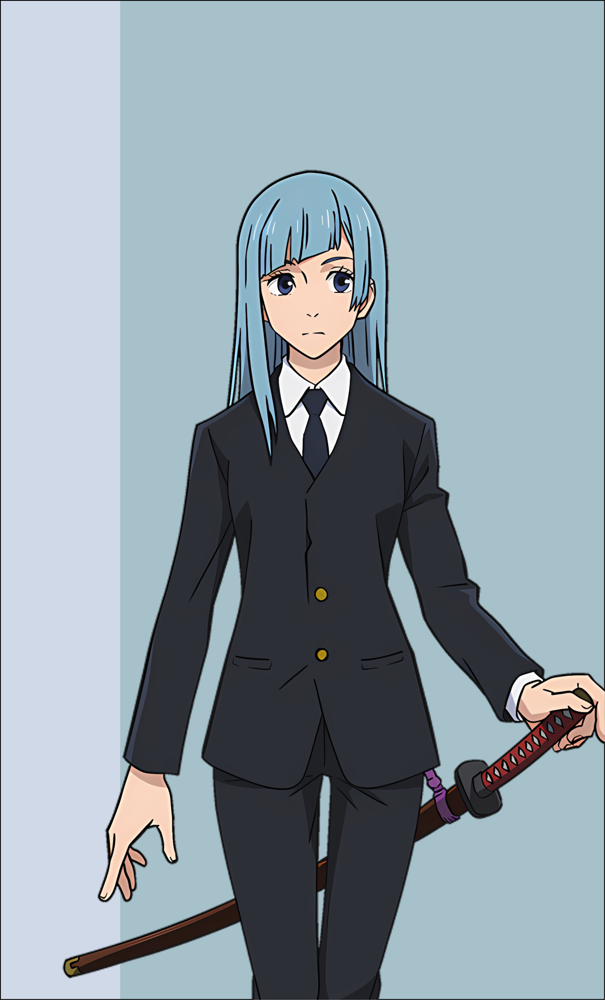
KIYOTAKA IJICHI
Born April 20th, 1991
Kiyotaka is fiercely loyal, the epitome of reliability in tough times. Reserved and professional, he excels as head manager of Jujutsu High, though he becomes nervous when things go awry, especially around his superiors (Gojo), who barrage him with belittling remarks.
SIMPLE BARRIER
TAURUS
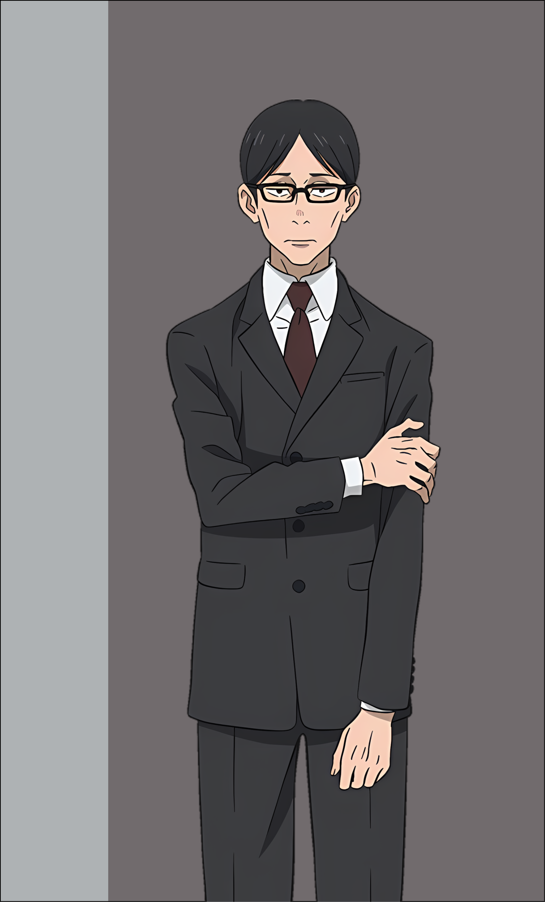
NORITOSHI KAMO
Born June 5th, 2000
Noritoshi is adaptable and resilient, capable of leading in diverse circumstances. Yet, his patience wears thin swiftly, allowing no room for forgiveness once crossed. Stoic and composed, Noritoshi grapples with the complexities of his family's expectations, yearning for acceptance and unity among clans.
CONVERGENCE
GEMINI
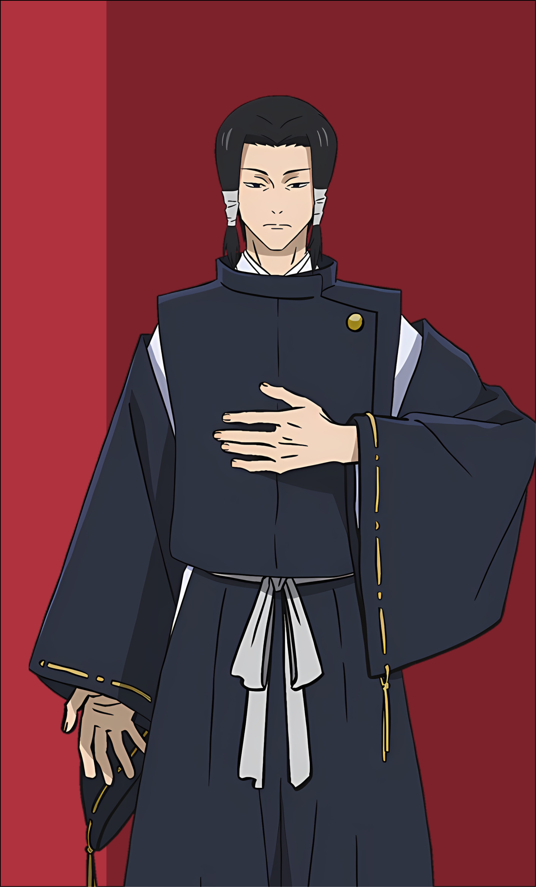
NANAMI KENTO 
Born July 3rd, 1980
Nanami is a reserved individual, often appearing stoic and indifferent. As a former Jujutsu student, his past experiences have shaped his perspective, leading him to question the profession's sacrifices. In his role as a mentor, he seeks to protect the young Jujutsu Sorcerers from the traumas he faced at their age.
OVERTIME
CANCER
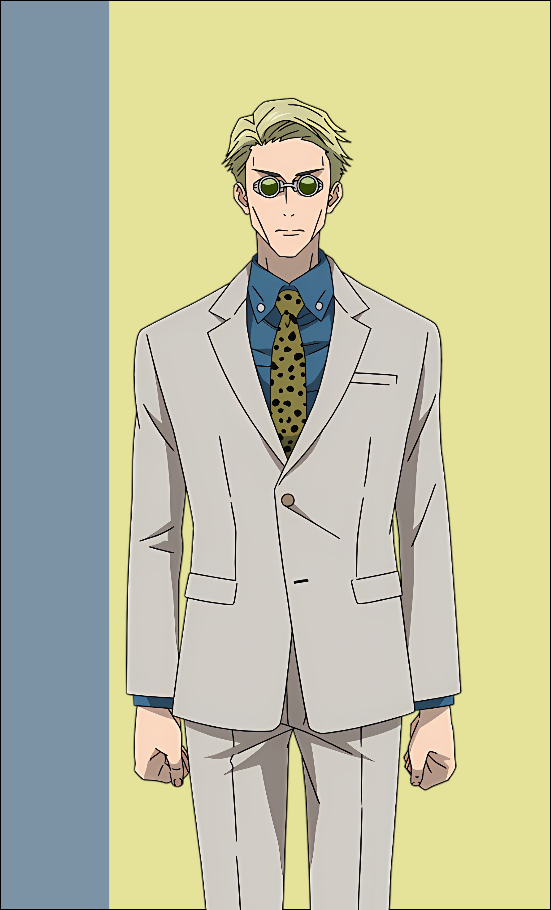
KUGISAKI NOBARA 
Born August 7th, 2002
From a young age, Nobara stood out, determined to trade the countryside for the big city. As a jujutsu sorcerer, Nobara carries herself confidently, unafraid to take charge even when her peers hesitate. Her strong sense of duty and pride as a fighter shine through, particularly in moments of crisis where she remains level-headed and decisive.
STRAW DOLL
LEO
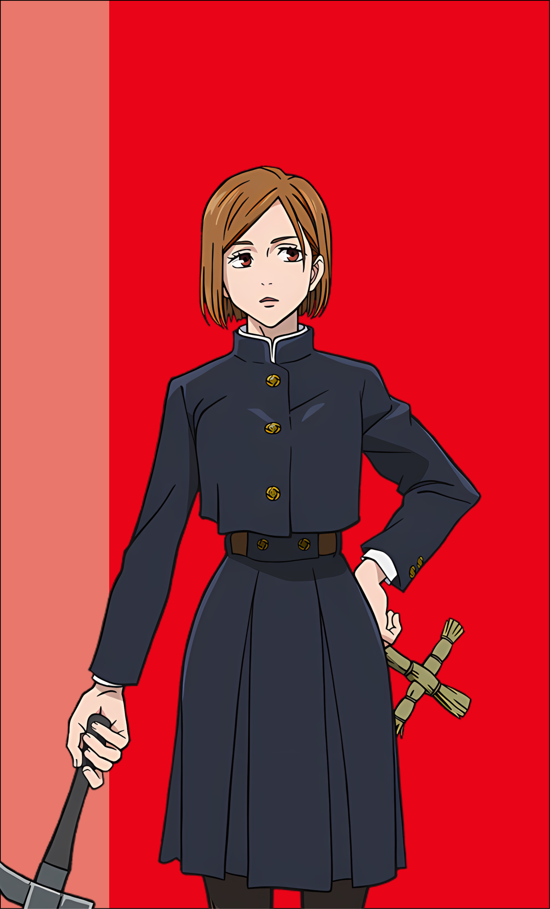
AOI TODO 
Born September 23rd, 2000
Aoi Todo epitomizes the Virgo traits of eccentricity and diligence. As a friend to Itadori, he helps him grow in his role as a new Jujutsu sorcer. Flamboyant yet deeply intelligent, he navigates battles with confidence and a profound sense of duty. In his free time, he is a devoted Takada Stan.
BOOGIE WOOGIE
VIRGO
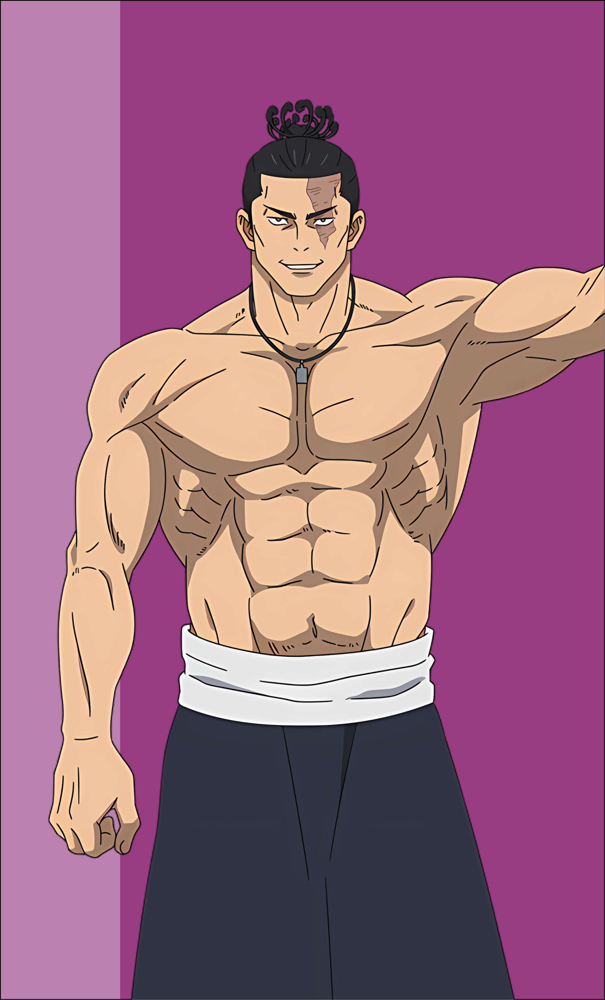
TOGE INUMAKI 
Born October 23rd, 2001
Toge embodies the empathetic nature of a Libra. Despite his initial aloofness, he's caring and protective, always putting his friends first. Using rice ball ingredients to communicate, he shields others from his cursed speech. Tuna Mayo!
CURSED SPEECH
LIBRA
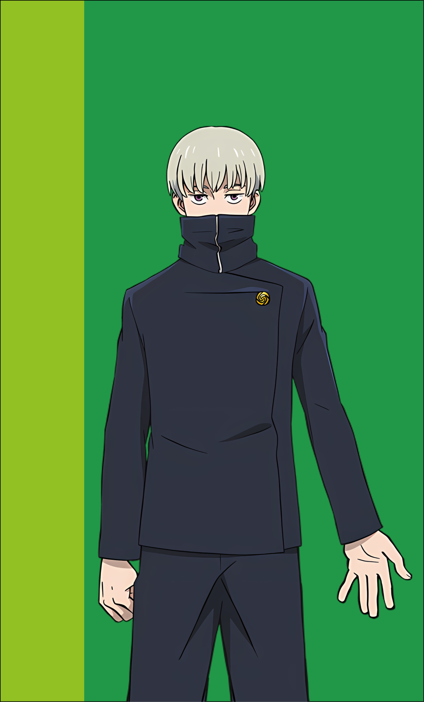
SHOKO IEIRI
Born Novemeber 7th, 1989
Shoko embodies the intensity and secrecy of a Scorpio. As a school doctor, she maintains a stoic professionalism, concealing her personal struggles behind a composed façade. Yet, her skills as a healer and reverse cursed technique user make her an invaluable asset in the world of jujutsu.
REVERSE CURSE
SCORPIO
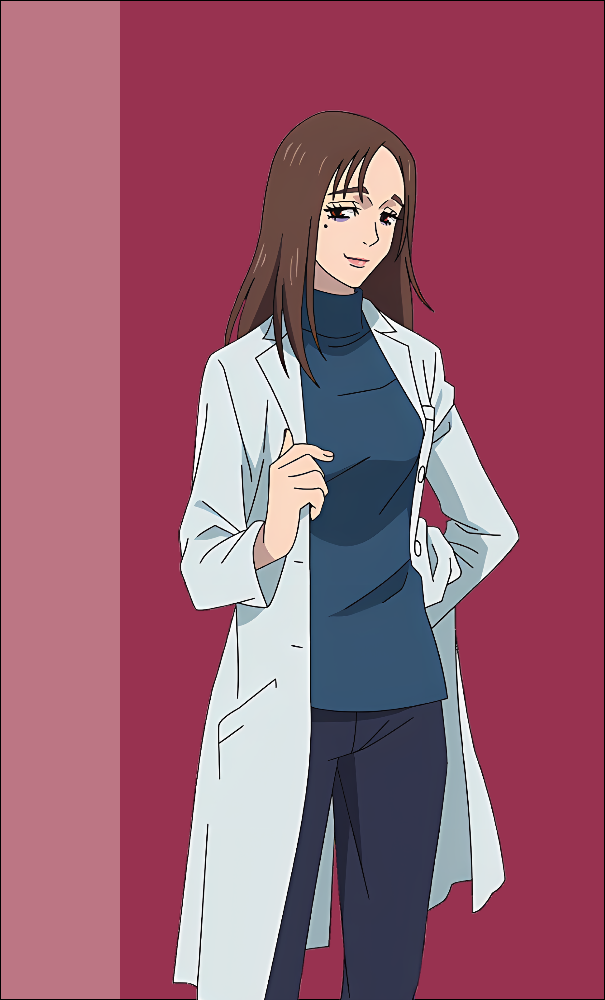
SATORU GOJO 
Born December 7th, 1989
Like his sign, Satoru Gojo is as charismatic as he is flighty. As the pride of the Gojo Clan (he is the only member) and the world's strongest jujutsu sorcerer, Satoru embraces the adventurous spirit of his zodiac sign. He uses his influence not just for protection but also to mentor and empower young allies at the Tokyo Jujutsu High.

INFINITE VOID
SAGITTARIUS
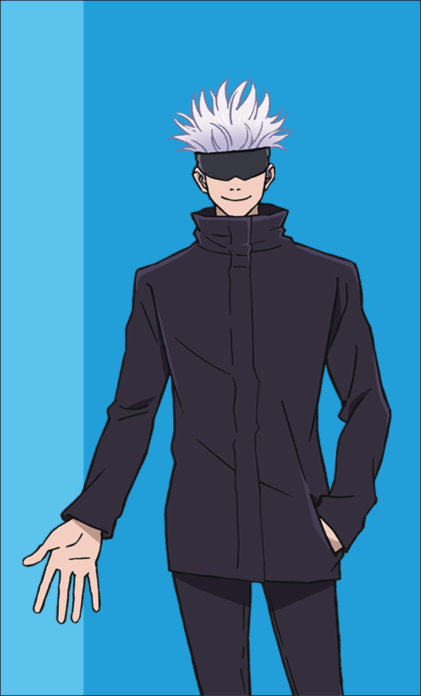
MEGUMI FUSHIGURO 
Born December 22nd, 2002
Megumi embodies the determination and practicality of a Capricorn. From a young age, he displayed maturity and dedication, protecting those he cares about. Despite his reserved nature, Megumi challenges tradition and follows his own path as a jujutsu sorcerer, forming deep connections with his friends along the way.
DIVINE DOGS
CAPRICORN
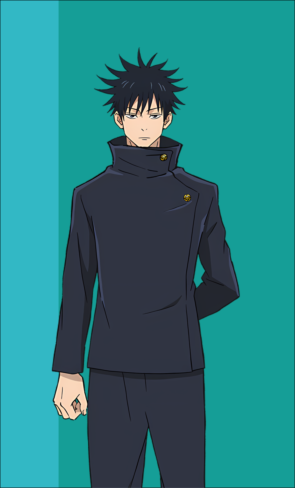